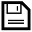

In this practical you will explore each of the registration steps within a standard two-step registration for functional images. We will first learn to use the registration tools within the FEAT GUI. Then we will see how to apply and invert transformations. Being able to achieve precise registrations is CRUCIAL for structural, functional and diffusion image analysis. If registrations are not accurate, further statistics at a structural or group level will not be accurate.
Take a look inside the data directory:
cd ~/fsl_course_data/registration ls
This directory contains the following images:
STRUCT.nii.gzFUNC.nii.gzFMAP_MAG.nii.gzFMAP_PHASE.nii.gzFMAPS.txtEXAMPLE_REG -
we will use this a bit later)multiband_data)The objective of this practical is to become familiar with how to perform and evaluate the results of registration in the FEAT GUI (the main functional analysis GUI). This involves multi-stage registration and fieldmap-based unwarping, and requires the images to be suitably prepared. Registration in other FSL GUIs (e.g. for ICA or diffusion analysis) works very similarly.
We need to perform brain extraction on the structural image prior to using
it for registration (as explained in the lecture). To do this run BET on the
image STRUCT.nii.gz, and save the result
as STRUCT_brain.nii.gz. Check the results with FSLeyes.
There are two images that the Siemens scanner saves from a fieldmap sequence. These are (in this case, renamed nicely for you):
FMAP_MAG.nii.gz FMAP_PHASE.nii.gz
where the first image represents the standard magnitude image from the fieldmap acquisition, and the second image represents a phase difference (between two different echo times, calculated internally as part of the fieldmap acquisition). The second image is proportional to a map of the distortions. Have a quick look at these with FSLeyes. We will need to use both magnitude and phase images.
We will start by brain extracting the first magnitude image. Run brain
extraction on the magnitude image and save the result
as FMAP_MAG_brain.nii.gz. We will then erode this image (shaving
off one voxel from all edges) as this image contains noisy partial volume
voxels in the phase difference image near the edge of the brain (you will see
this below, whereas in practice you would look first in order to decide
whether to erode or not). To do the erosion we run:
fslmaths FMAP_MAG_brain -ero FMAP_MAG_brain_ero
This performs an erosion operation (stripping one voxel from the edge) with
the general tool fslmaths which acts as an image calculator,
taking input images and performing operations on them and then saving them as
a new image (the last name specified). Check what the results look like in
FSLeyes:
fsleyes FMAP_MAG -cm greyscale \ FMAP_MAG_brain -cm red-yellow \ FMAP_MAG_brain_ero -cm blue-lightblue &
Add the phase (FMAP_PHASE.nii.gz) to the viewer to see why we needed to erode the brain in order to avoid the noisy voxels at the edge. Note that the "lost" voxels will have fieldmap values filled in by extrapolating from the nearest voxel inside the mask, which is quite accurate for fieldmaps as the field variations are quite smooth (you cannot see this in these images as it happens in the later processing).
Here we need to take this raw scanner output, which is scaled in a strange
way (0 to 360 degrees are mapped to 0 to 4096), and convert it into radians
per second image (this is equivalent to an image in Hz multiplied by
2*pi). For this we need the phase difference image, the brain extracted (and
eroded) magnitude image and the difference in the echo times of the fieldmap
acquisitions. This latter value is 2.46ms and can be found in the text
file FMAPS.txt, which is conveniently given here but will not
exist normally. Therefore it is important to record this echo time difference
when you scan (your scanner operator will be able to give you the value, and
although it can usually be determined later on, it is much easier to record it
at the time when the scanner operator is present).
Armed with this information, all we need to do is run the GUI
called Fsl_prepare_fieldmap. Note that these images
come from a Siemens scanner. Set up all the information required in the GUI,
(phase image is FMAP_PHASE.nii.gz and the brain extracted
magnitude image is FMAP_MAG_brain_ero.nii.gz) calling the
output FMAP_RADS, and press Go. View the output with
FSLeyes and check that most of the brain has small values (less than 200
rad/s) while in the inferior frontal and temporal areas the values are larger
(either large and positive or large and negative).
With the fieldmap processed and the structural image brain extracted we are now ready to use the FEAT GUI for registration. Note that the "unwarping" of images using fieldmaps is done in the Pre-stats tab of the FEAT GUI.
Start the FEAT GUI by typing Feat in the terminal. From the
drop-down list in the top right corner select Preprocessing. We now
need to set up the GUI to run our registration with unwarping.
We will start with the main Data tab. To begin with click on the
Select 4D data button and select the image
FUNC.nii.gz. Once this is done, click on the file browser
for the Output directory and make sure the directory is set to
somewhere in your home directory. Then, in
the Selection box at the bottom type "test_reg"
and press OK (if you leave it empty, it would normally default to something like
~/fsl_course_data/registration/FUNC.feat).
Now go to the Pre-stats tab and click the B0 unwarping button. Note that all other parts of this tab (e.g. motion correction) are set to their default values and we will leave them with these settings. Now go through and populate the relevant parts:
FMAP_RADS (select this using the file
browser that the folder icon opens)FMAP_MAG_brainFMAPS.txt file here, but in general you need to take note
of this value when scanning - ask your operator - and if you are using
parallel acceleration then it needs to be divided by the acceleration
factor).Go to the Registration tab and click on the Main structural
image button. Open the file browser and
select STRUCT_brain. Make sure the options underneath are set to
Normal search and BBR. In the Standard space box,
make sure the image MNI152_T1_2mm_brain is selected in the correct directory.
(This reference image is part of FSL. In general, to find out where FSL is
installed, type echo $FSLDIR into a terminal. The standard space
reference images are in data/standard/ inside that directory.)
We will not select the Nonlinear button in the Standard space
section for this part of the practical in order to save time, but you normally
would use this setting as it gives the best results.
OK, that's everything we need to register the functional image to standard space. So double-check that the Pre-stats and Registration tabs look correct and when you are happy press the Go button at the bottom. This should start up a web browser showing the progress of FEAT - although it may take a minute for this to appear.
Now go back to the FEAT GUI, and we are going to run a comparison
registration without fieldmap unwarping. So go to
the Pre-stats tab and de-select the B0 unwarping button. In
the Data tab, re-name the output to something like
test_reg_no_fmap. Everything else stays the same, and once you
are happy with all the setting press the Go button again.
The FEAT jobs will take about 15 minutes to finish. In the meantime we can
have a look at the registrations provided in the EXAMPLE_REG
subject directory. Change to this directory, and open the webpage report for
the registration:
cd ~/fsl_course_data/registration/EXAMPLE_REG/example_reg.feat firefox report_reg.html &
Look carefully at the results of the registrations in the web page report and in the Unwarping page for the cases where fieldmap-based correction was run. Do these registrations seem accurate to you? Note that you should not trust borders with signal loss areas as these are not true anatomical boundaries but artificial borders.
It is also highly recommended to use FSLeyes to look in more detail. We can look at each of the two registration steps separately (functional to structural, and structural to standard), but remember when these two steps are combined to produce a functional to standard transformation, the functional image is only resampled ONCE into standard space. Let's first look at the initial registration step (functional to structural) in FSLeyes. Load the structural image into FSLeyes using the following command:
cd reg fsleyes highres.nii.gz &
This highres.nii.gz image is created in
the reg folder by FEAT from the T1 structural image we
specified.
Using the FSLeyes GUI, add the example_func2highres.nii.gz
image (example_func is a distortion-corrected example volume from
the EPI/functional data, and example_func2highres is
the example_func image transformed into structural space), and
the example_func2highres_fast_wmedge.nii.gz (this image shows the
location of the white matter edges, as defined by the highres image). Change
the colour map of this wmedge image, by selecting in the image
list at the bottom left, and then selecting Red in the colour map
drop down list at the top of the FSLeyes window.
Click around the image to see where the registration is particularly good
(as the red edges derived from the structural should align with the changes
the in greyscale intensities of the functional image). Toggle the visibility
of the example_func2highres image on and off (the
button), or adjust its transparency
(the Opacity slider in the display toolbar at the top of the FSLeyes
GUI) to judge its alignment to the highres image.
Feel free to look at other images in this reg subdirectory or
in the unwarp subdirectory inside this. For example, the
uncorrected registration result is in the
file unwarp/example_func_distorted2highres.nii.gz and can be
viewed separately or added to the FSLeyes session above.
Now open another FSLeyes session (without closing the old one) from the terminal to view the second registration step (structural to standard):
fsleyes standard.nii.gz &
Add the highres2standard.nii.gz image, which is the structural
image transformed into standard space. In this case non-linear registration
(FNIRT) was used after affine linear transformation (FLIRT) for maximum
accuracy. Use the same FSLeyes tools to check the registration of the
structural image to the standard image.
Leave both of these FSLeyes sessions open for the moment, as we are now going to compare the registrations you just ran to these given examples.
Firstly, look at your webpage reports for the registrations you ran. Can you spot any noticable differences compared to the example registration webpage report? We will now compare these registrations carefully using FSLeyes.
Go back to the FSLeyes window where you were looking at the first
registration step (functional to structural). Now add
the example_func2highres.nii.gz image from the registration you
ran with fieldmap correction
(~/fsl_course_data/registration/test_reg.feat/reg/example_func2highres.nii.gz).
How does this registration compare to the original? It should be identical, or
at least very, very similar.
Now add the registration you ran WITHOUT fieldmaps
(~/fsl_course_data/registration/test_reg_no_fmap.feat/reg/example_func2highres.nii.gz).
You may wish to rename this image within FSLeyes to something like
example_func2highres_no_fmap.nii.gz to avoid confusion (as
FSLeyes will initially give both images the same name). Use the FSLeyes tools
you practised earlier to compare the registrations with and without
fieldmaps
Now go to the FSLeyes window where you were looking at the second
registration step (structural to standard). Add
the highres2standard.nii.gz image from the registration you ran
(~/fsl_course_data/registration/test_reg.feat/reg/highres2standard.nii.gz).
This registration step was done linearly (using FLIRT) rather than nonlinearly
(using FNIRT). Compare the linear and linear+non-linear versions of this
step.
Now add (to FSLeyes) the second brain example we have provided, using both linear and non-linear registration to the standard space:
~/fsl_course_data/registration/EXAMPLE_REG/BRAIN_2/brain2_reg_linear2standard.nii.gz ~/fsl_course_data/registration/EXAMPLE_REG/BRAIN_2/brain2_reg_nonlinear2standard.nii.gz
Finally, de-select (or remove) the highres2standard images
within the FSLeyes session. Add the combined registration images from the
supplied example using both fieldmaps and non-linear registration
(~/fsl_course_data/registration/EXAMPLE_REG/example_reg.feat/reg/example_func2standard.nii.gz)
and the registration you ran without fieldmaps or non-linear registration
(~/fsl_course_data/registration/test_reg_no_fmaps.feat/reg/example_func2standard.nii.gz).
You may need to rename these within FSLeyes to avoid
confusion. The registration without fieldmap correction or non-linear
registration will be markedly worse than the original registration, as both
sub-optimal registration steps have now been concatenated into one step.
The objective of this section of the practical is to become familiar with applying transformations, as well as their inverses, to move masks (or images) between different spaces. This is very useful as although FEAT, Featquery and FDT do a lot of this "behind the scenes" for you, there will be many cases when you want to do something beyond the standard options and then you'll need to be able to do this for yourself.
We will be working with the files from the Feat analysis in the previous part of the practical, however what we are doing is not restricted to functional analysis. FDT outputs similar files when analysing diffusion datasets, and the same files (affine transformation matrices and warp fields) are output by the fundamental tools, FLIRT and FNIRT, when doing any structural analyses.
If you look in the example registration directory you will see many different files:
cd ~/fsl_course_data/registration/EXAMPLE_REG/example_reg.feat/reg/ ls
The crucial ones for registration purposes are the transformation files
that come in two different varieties: affine matrices (ending
with .mat) and warp fields (ending
with _warp.nii.gz). For now we will not look at the contents of
these files (see the exercises below for more about this) but instead we will
explain what each of them means.
The naming convention is always from the input space to the reference space
(or source to destination if you prefer). For example, the
file highres2standard.mat is an affine transformation going from
the highres (structural) space to the standard (MNI) space. There is also the
file highres2standard_warp.nii.gz that represents a non-linear
warp from highres space to standard space. We have both of these because it is
necessary to initialise all non-linear registrations with an affine
registration (that gets the head in roughly the right position and scaling to
allow the non-linear registration to work well). When you want to use a
transformation between these spaces, you would generally go for the warp field
(when it exists) and ignore the initial affine registration. Note that the
warp fields include the affine transformation as part of them, so you don't
need to use both.
There are three main spaces in a FEAT analysis: functional (represented by
example_func); structural (represented by highres);
and MNI (represented by standard). Various combinations of
transformations exist in this directory (e.g. example_func2highres,
example_func2standard, highres2standard) but not all
(e.g. standard2highres). Note that in a diffusion analysis, run
via FDT, the three spaces are called diff, str
and standard, and all combinations of transformations are
provided.
One thing that might confuse you is why there
exists example_func2highres_warp.nii.gz when BBR (which
performs linear registration) was run to do the registration of
functional to structural images. This is because of the fieldmap-based
distortion correction, which is not just a linear (affine) registration and so
must be represented as a warp field.
Now let's make a mask in the standard (MNI) space so that we can transform
it into the other spaces and use it to calculate some ROI quantities. We will
do this using FSLeyes - type in fsleyes -std & to get
started.
Once FSLeyes is open, select the Settings > Ortho View 1 > Atlas panel menu option. This will open up a new panel along the bottom of the FSLeyes GUI that allows you to look at anatomical information from the atlases included with FSL. We can use these atlases to create a mask image (we will choose the left hippocampus from the Harvard-Oxford subcortical atlas, but there are lots of possibilities).
Click the Atlas search tab. Type hip into the search
box at the top of the right section - note that as you type, all atlases, in
the atlas list to the left, which contain a structure that matches the
search term, are highlighted. Click the checkbox next to the
Harvard-Oxford Subcortical Structural Atlas to add it as an
overlay. Then, in the structure list on the right, click the "+"
button by the Left Hippocampus entry, to move the cursor location
to this structure.
Now we are going to select the voxels in the left hippocampus. An alternative method to create a mask will be discussed in the first FEAT practical.
fslroi and fslmaths with the images
in $FSLDIR/data/atlases and finding the appropriate values from
the xml files (but be warned that the numbers in the xml files differ by one
from the numbers needed in fslroi - see the
FSL
wiki for more details).
A new image will be added to FSLeyes, with ones in the left hippocampus, and zeros everywhere else. Exit edit mode (Tools > Edit mode), and toggle the visibility of the Harvard Oxford subcortical atlas (the button in the overlay list) so you can see your new mask image better.
We will now save this mask image out to a file in the directory ~/fsl_course_data/registration/EXAMPLE_REG/example_reg.feat/reg.
Click on the save button
() alongside the mask image in
the overlay list, and choose an appropriate name
(e.g. LeftHippMask). To make life a lot easier later on make sure
you remove all spaces from the filename. This is a general rule to stick with,
as spaces within filenames will almost always cause problems and are easily
avoided.
We want to transform the mask we just made into the functional space in
order to calculate an ROI value (e.g. of a statistical image, or an average
timecourse, etc.). To go from the standard space to the functional space we
would need to have the transformation
standard2example_func_warp.nii.gz (or something named like
this). In FEAT this does not exist, but in FDT the equivalent is generated
automatically, and called standard2diff_warp.nii.gz.
As feat does not create the required warp field, we need to create it
ourselves from the transformations that it does provide. In this case we do
not want to undo the distortion correction (i.e. we want a mask in
distortion-corrected functional space). For the structural-to-functional
transform we therefore only need highres2example_func.mat which
was already created by FEAT. We do need to calculate the nonlinear
standard-to-structural transform, which can easily be done using
the invwarp command, as follows:
# This would take too long to run during a practical session, # (around 20 minutes) so we have already run it for you. invwarp -w highres2standard_warp -o standard2highres_warp -r highres
where the final part (the reference) controls the size (FOV) and resolution
of the warp and should generally be the destination space of the new
transform. As this warp transforms from standard space to structural (we will
stick on the final transformation to functional space below), we specify
highres.
Now that we have the transformation that we need, we can apply it using
the applywarp command, by specifying a warp
(-w). The command you need is (with your own filenames):
applywarp -i LeftHippMask -r example_func -o LeftHippMaskFunc \ -w standard2highres_warp --postmat=highres2example_func.mat
which goes from the standard space via
the highres space to the example_func space (the
last part only needing a rigid-body transformation matrix, as we want to end
up in the distortion-corrected functional space, rather than the original
distorted one).
Use the command:
fsleyes example_func LeftHippMaskFunc &
to see the mask on the functional image. Note that the values at the edge of the mask lie between 0 and 1.
In order to obtain a binary mask (where each voxel has a value of either 0
or 1) we need to threshold and binarise the transformed mask. This is easily
done with fslmaths but the threshold used is arbitrary. If a high threshold is
chosen (e.g. 0.9) then most edge voxels will be excluded and the mask will be
tighter and less likely to include neighbouring structures. This is often
desirable when trying to make sure that only the structure of interest is
included, but it might end up with the mask being quite small. So sometimes a
threshold near 0.5 is preferable, to make a mask of similar size/volume. Or
sometimes a mask is needed that does not leave out any of the structure, in
which case a low threshold (e.g. 0.1) can be better. We also binarise the mask
with the -bin command in fslmaths, to make all
voxels within the mask have a value of 1. In this case we will choose a high
threshold in order to get a mask where we are very confident that each voxel
in the mask is within the hippocampus. This can be done with:
fslmaths LeftHippMaskFunc -thr 0.9 -bin LeftHippMaskFuncBin
Load the resulting image into FSLeyes and compare it to the original, pre-thresholded version in the functional space.
There are many possible ways in which a mask can be used (e.g. getting average statistical values) but as an example will we calculate the average timecourse of the fMRI within this mask. This is done with the command:
fslmeants -i ../filtered_func_data -m LeftHippMaskFuncBin
which will output a column of numbers, representing the timecourse of the average signal intensity (of the pre-processed fMRI data) within this mask. We won't do anything with this for now, but such calculations can be very useful in all sorts of situations.
The main point of this exercise was to see how to transform your own masks
(or images, as the only difference is skipping the thresholding and binarising
steps) between spaces. For functional studies you can often do similar things
with the tool Featquery but it is not as flexible and generally
useful as being able to process things yourself.
A new functional imaging technique that is becoming more popular is 'multiband imaging'. Multiband imaging allows people to acquire functional images more quickly, allowing more volumes in the functional 4D file for more statistical power, or shortening functional scanning times. Many of you might be using multiband data for your own imaging projects, so here we have an optional section to demonstrate how we can optimise registration of multiband scans.
Because multiband images are acquired very quickly, they can have low contrast between grey and white matter. Therefore, to aid registration we can add an additional high-contrast image to our registration between functional and standard spaces. This high-contrast image is usually one of the first few scans ('pre-saturation' scans) acquired in a multiband sequence, which are usually discarded before functional analysis. In every other way it matched the functional scans used in the analysis, so it is a perfect match to the FUNC.nii.gz image, just with greater contrast between tissues in the brain. Note that registration of multiband data does not require this step to run, but it is recommended to use this intermediate contrast image for improved registration of multiband images.
Move into the multiband_data directory:
cd ~/fsl_course_data/registration/multiband_data/ ls
This directory contains the following images:
STRUCT.nii.gz and STRUCT_brain.nii.gzMULTIBAND_FUNC.nii.gzCONTRAST_FUNC.nii.gzFMAP_MAG.nii.gz and FMAP_MAG_brain.nii.gzFMAP_PHASE.nii.gzFMAP_RADS.nii.gzFMAPS.txtexample_multiband_reg.featIf you are short on time you can open the example registration web report to have a look at this registration, and note how the intermediate step helps the functional to structural registration:
firefox example_multiband_reg.feat/report_reg.html &
Note that the registration from example_func to highres is now split into two parts. The first transforms from example_func to the high-contrast volume (referred to as initial_highres). The second transforms from the high-constrast volume to highres.
If you want to try running this registration yourself, open a new FEAT GUI by typing Feat & in the terminal. Change the drop-down list to Preprocessing and enter the MULTIBAND_FUNC.nii.gz image in the Select 4D data input. Now go to the Pre-stats tab and click the B0 unwarping button. Fill in the information as follows (note that not all scan information is the same as before so follow the instructions carefully):
FMAP_RADS (select this using the file
browser that the folder icon opens)FMAP_MAG_brainFMAPS.txt file here, remember to ask your operator and divide by the
parallel-imaging acceleration factor (which is not the same as the multi-band
acceleration factor). All other parts of this tab can be left with their default settings. In the Registration tab, now click on the Expanded functional image button. Open the file browser and select CONTRAST_FUNC.nii.gz, then change the degrees of freedom to 6. Note that registration does not require this step to run, but it is recommended to use this intermediate contrast image for registration of multiband data. Select STRUCT_brain.nii.gz as your Main structural
image. Make sure you turn the non linear option OFF so that you save some time here. Go back to the Data tab, and rename your output (in the Output directory section) to something like "test_reg_multiband". Check all your options and press the Go button at the bottom again. This should start up a new web browser tab with the progress of your new FEAT run. Note how the extra registration step is now included in the report. Feel free to load any of the registration steps into FSLeyes to explore these in more detail.
The End.